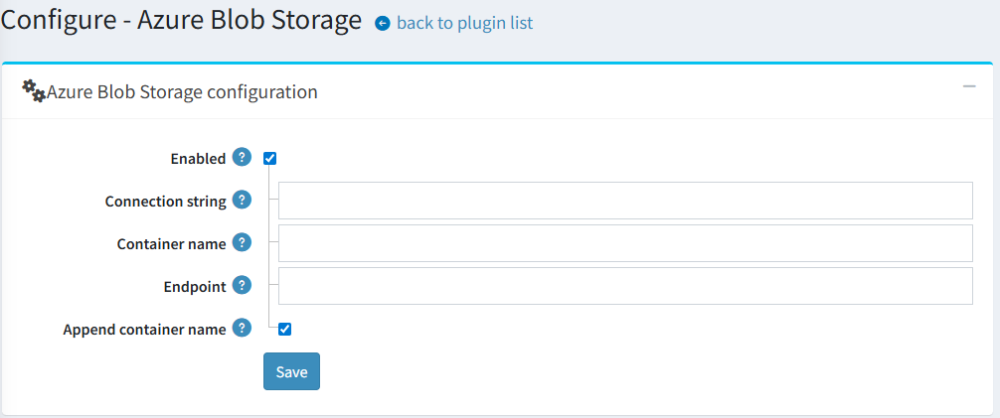
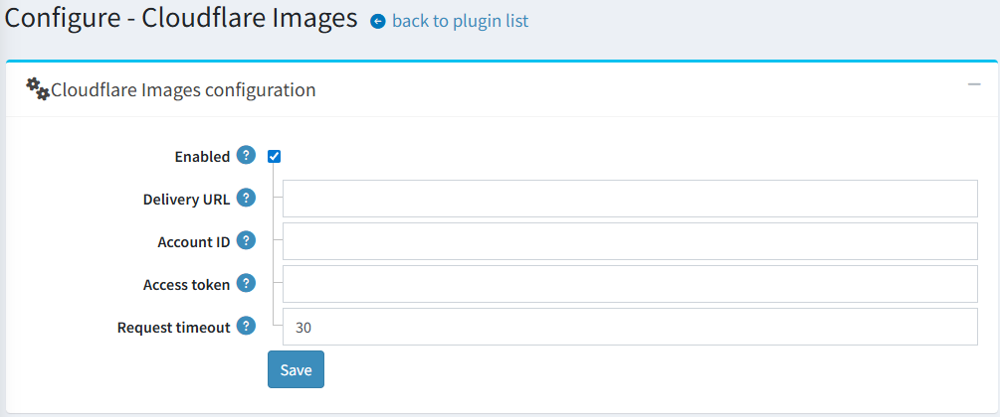

Cloudflare Images 整合
概述
從 4.90 版本開始，縮圖管理功能已進行重構以提供更高的彈性。系統引入了一個新的介面 IThumbService 來處理先前由 IPictureService 所管理的所有縮圖相關操作。
以下方法已移至 IThumbService：
GetThumbLocalPathAsyncGeneratedThumbExistsAsyncSaveThumbAsyncGetThumbLocalPathByFileNameAsyncGetThumbUrlAsyncDeletePictureThumbsAsync
作為此項變更的一部分，縮圖儲存邏輯已從核心應用程式中解耦，改為獨立的外掛。現有的 Azure Blob Storage 功能現在是一個獨立的外掛。此外，我們也開發了一個新的外掛，將 Cloudflare Images 作為縮圖儲存解決方案整合進來。
Note
預設情況下，Azure Blob 和 Cloudflare Images 外掛（Misc.AzureBlob 和 Misc.CloudflareImages）都會列在 InstallationConfig.DisabledPlugins 屬性中。這確保了這些外掛不會在全新安裝時自動啟用，讓商店負責人能根據需求選擇並安裝最合適的儲存解決方案。
設定 Azure Blob Storage
我們可以使用 Azure Blob Storage 來儲存 Blob 資料。nopCommerce 已經內建此功能的整合，您只需要正確設定以下資訊即可使用。這些設定值可以在您於 Azure 建立儲存帳戶時取得。

- ConnectionString 此設定需要一個字串值。您需要在此處加入您的
AzureBlobStorage連接字串。 - ContainerName 此設定的值同樣為字串類型。在此設定中，我們指定 Azure BLOB storage 的容器名稱。
- EndPoint 此設定同樣需要一個字串值。我們需要在這裡設定 Azure BLOB storage 的端點。
- AppendContainerName 此設定需要一個布林值。根據在建構 URL 時是否需要將容器名稱附加到
EndPoint，將此值設為true或false。
設定 Cloudflare Images
此外掛的設定相當簡單，除了總開關之外，包含四個欄位。

其中一個關鍵欄位是 Delivery URL。它必須依照下列特定格式進行設定：
https://imagedelivery.net/[account_hash]/<image_id>/<variant_name>
此 URL 作為一個範本。此外掛將動態插入所需的 image_id 和 variant_name，以產生顯示在網站上的縮圖最終 URL。
使用方式
一旦設定完成並啟用，此外掛便會在背景自動運作，與 Azure Blob storage 的整合方式類似。它會無縫處理以下事項：
- 將新縮圖上傳至 Cloudflare Images 服務。
- 在所有公開頁面上，將本機縮圖 URL 取代為對應的 Cloudflare Images URL。